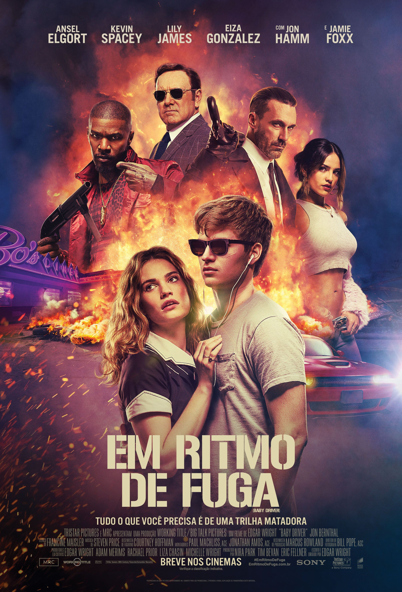
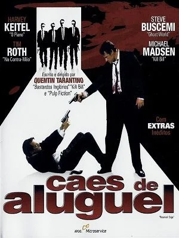
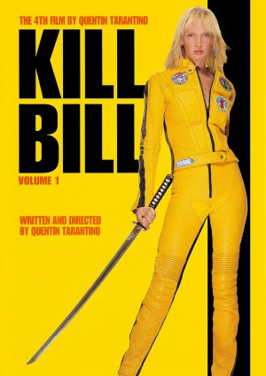

Lista de recomendação
|

Gênero: Ação, Crime, Suspense Disponível em:Prime Video,Apple TV ,Google Play |
NotasIMDB:7,5 Rotten Tomateos: Crítica:92% Público:86% J&J:8,2 |
Sinopse"Em Ritmo de Fuga" é um filme de ação que acompanha Baby, um jovem motorista de fuga talentoso que usa a música para sincronizar suas manobras no volante. Trabalhando para um chefão do crime, ele sonha em deixar a vida do crime para viver com Debora, sua paixão. Porém, um último assalto sai do controle, colocando tudo o que ele ama em risco. Com muita ação e uma trilha sonora marcante, o filme é uma mistura de adrenalina e emoção. |
|
Review pessoal"Em Ritmo de Fuga" é um filme eletrizante que combina ação frenética com uma trilha sonora impecável. A direção de Edgar Wright transforma cada cena em uma coreografia envolvente, enquanto o elenco entrega performances marcantes. Com estilo, emoção e muita música, é uma experiência única e imperdível para fãs de ação.ABSOLUTE CINEME |

Gênero: Ação, Aventura e Drama Disponível em: HBO Max e Prime Video. |
Notas de outros sitesIMDB:7,8 Rotten Tomateos: critíca:85% Público:87% J&J:8,4 |
SinopseO jovem Bruce Wayne (Christian Bale) viaja para o Extremo Oriente, onde é treinado em artes marciais por Henri Ducard (Liam Neeson), membro da misteriosa Liga das Sombras. Quando Ducard revela o verdadeiro propósito da Liga – a destruição completa de Gotham City – Wayne retorna a Gotham com a intenção de limpar a cidade sem recorrer ao assassinato. Com a ajuda de Alfred (Michael Caine), seu leal mordomo, e Lucius Fox (Morgan Freeman), especialista em tecnologia da Wayne Enterprises, nasce Batman. |
|
Review pessoalO filme é o começo da trilogia Batman de Nolan; uma sequência intitulada Batman: O Cavaleiro das Trevas estreou em julho de 2008 e também marcou o retorno de Nolan e Bale na franquia,[3] e uma segunda sequência intitulada Batman: O Cavaleiro das Trevas Ressurge foi lançado em julho de 2012. |

Gênero: Ação, Espionagem e Suspense. Disponível em: Star+ e Prime Video. |
Notas de outros sitesIMDB:7,7 Rotten Tomateos: critíca:82% Público:90% J&J:8,5 |
SinopseJason Bourne está morando na Índia quando é incriminado pelo agente russo Kirill pelo roubo de milhões da CIA; Kirill começa a perseguir Bourne, com a intenção de assassiná-lo - mas enquanto Bourne e sua namorada, Marie, estão fugindo, um tiro dirigido a ele a mata; jurando vingança, Bourne tenta provar sua inocência e levar os culpados à justiça, mas precisa fugir da chefe da CIA, Pamela Landry, que está convencida de que ele é culpado. |
|
Review pessoalThe Bourne Supremacy" (2004), dirigido por Paul Greengrass, é o segundo filme da franquia Bourne e uma sequência de The Bourne Identity (2002). Baseado na obra de Robert Ludlum, este filme solidificou o status de Jason Bourne (interpretado por Matt Damon) como um dos personagens |

Gênero: Ação, Drama e Artes Marciais. Disponível em: Prime Video. |
Notas de outros sitesIMDB:8,0 Rotten Tomateos: critíca:84% Público:89% J&J:8,6 |
SinopseA Noiva (Uma Thurman) continua de onde parou no volume um com sua busca para terminar a lista de alvos que ela compôs de todas as pessoas que a injustiçaram, incluindo o ex-namorado Bill (David Carradine), que tentou ter ela foi morta há quatro anos durante seu casamento com outro homem. Deixando vários mortos em seu rastro, ela finalmente rastreia Bill no México. Usando habilidades que aprendeu durante sua carreira de assassina, ela tenta terminar o que se propôs a fazer. |
|
Review pessoalVolume 2 de Kill Bill explora os temas de vingança e perdão de maneira mais profunda. A Noiva confronta não apenas aqueles que a traíram, mas também suas próprias escolhas e o custo emocional da vingança. A relação dela com Bill (interpretado por David Carradine) é complexa e multifacetada, culminando em um confronto emocional que vai além da violência. |

Gênero: Ação e Drama. Disponível em: Prime Video, Apple TV , Google Play. |
Notas de outros sitesIMDB:8,2 Rotten Tomateos: critíca:96% Público:99% J&J:9,0 |
Sinopse"Top Gun: Maverick" serve como uma homenagem ao filme original, trazendo de volta Tom Cruise como o icônico piloto Pete "Maverick" Mitchell. A sequência respeita a nostalgia do original, incorporando referências e elementos que os fãs reconhecerão, enquanto também apresenta uma nova geração de personagens. |
|
Review pessoal"Top Gun: Maverick" serve como uma homenagem ao filme original, trazendo de volta Tom Cruise como o icônico piloto Pete "Maverick" Mitchell. A sequência respeita a nostalgia do original, incorporando referências e elementos que os fãs reconhecerão, enquanto também apresenta uma nova geração de personagens. |
|

Gênero: Crime, Drama e Thriller. Disponível em:HBO Max |
h2>Notas de outros sites
IMDB:8,3 Rotten Tomateos: critíca:90% Público:94% J&J:9,6 |
SinopseUm grupo de ladrões se reúne para realizar o roubo de diamantes perfeito. Tudo se transforma em uma emboscada sangrenta quando um dos homens é informante da polícia. À medida que o grupo começa a questionar a culpa uns dos outros, as crescentes tensões ameaçam explodir a situação antes que a polícia intervenha. |
|
Review pessoalCães de Aluguel aborda temas como lealdade, traição e confiança em um ambiente criminoso. À medida que os personagens tentam descobrir quem é o traidor no grupo, o filme explora como as relações e as alianças podem ser frágeis em situações extremas. O dilema moral que os personagens enfrentam gera tensão e provoca reflexão. |
|

Gênero: Ação, Artes Marciais e Thriller. Disponível em: Prime Video. |
Notas de outros sitesIMDB:8,2 Rotten Tomateos: critíca:85% Público:81% J&J:9,7 |
SinopseUma ex-assassina, conhecida simplesmente como A Noiva (Uma Thurman), acorda do coma quatro anos depois que seu ciumento ex-amante Bill (David Carradine) tenta matá-la no dia de seu casamento. Alimentada por um desejo insaciável de vingança, ela promete se vingar de todas as pessoas que contribuíram para a perda de seu filho ainda não nascido, de toda a sua festa de casamento e de quatro anos de sua vida. Depois de elaborar uma lista de alvos, a Noiva parte em sua busca, enfrentando ferimentos indescritíveis e inimigos inescrupulosos. |
|
Review pessoalKill Bill é uma obra-prima do cinema contemporâneo que combina ação, estilo e narrativa de forma magistral. Com personagens memoráveis, uma estética visual marcante e uma trilha sonora envolvente, o filme se destaca como um tributo ao cinema e à cultura pop. É uma exploração emocionante dos temas de vingança, força e o custo da justiça, que ressoa com o público de maneiras profundas e impactantes. |

Gênero:Ação, Crime e Drama. Disponível em: Globoplay e Prime Video. |
Notas de outros sitesIMDB:8.0 Rotten Tomateos: critíca:51% Público:87% J&J:10 |
SinopseO capitão (Wagner Moura) de uma força policial especial brasileira considera qual dos dois novos recrutas (André Ramiro, Caio Junqueira) seria um sucessor adequado. |
|
Review pessoalO filme é uma dramatização da vida de policiais do BOPE (Batalhão de Operações Policiais Especiais), que enfrentam não apenas criminosos, mas também a corrupção endêmica dentro da própria polícia e do sistema. A narrativa é crua e direta, mostrando as dificuldades enfrentadas pelos policiais e a complexidade do combate ao tráfico de drogas. |